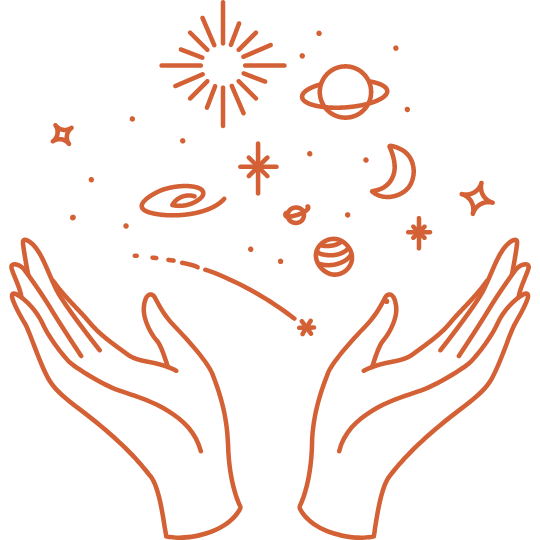
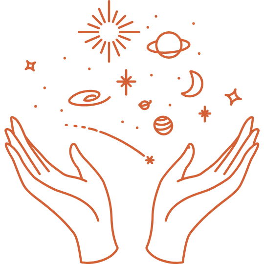

Você já parou para pensar que o universo está literalmente ao alcance das nossas mãos?
O conhecimento sobre o espaço não é uma fronteira distante, mas uma jornada acessível que todos podemos embarcar.
O Portal para Além das Estrelas
Você já parou para pensar que o universo está literalmente ao alcance das nossas mãos?
O conhecimento sobre o espaço não é uma fronteira distante, mas uma jornada acessível que todos podemos embarcar.
Imagine um universo em constante transformação, onde cada estrela que nasce, cada galáxia que colide, e cada buraco negro que se forma, molda o tecido do espaço e do tempo.
A humanidade está testemunhando uma era de exploração espacial sem precedentes. Embarcamos em missões audaciosas que nos levam além dos limites conhecidos do nosso sistema solar e nos aproximam das estrelas distantes.
Agências espaciais de todo o mundo, incluindo a NASA, ESA, SpaceX e outras, estão unindo forças para lançar sondas, telescópios espaciais e expedições tripuladas, impulsionando-nos para novos horizontes.
Nossa exploração do espaço não é apenas uma busca pelo conhecimento, mas também uma inspiração para o futuro.
Ainda há muito o que descobrir!